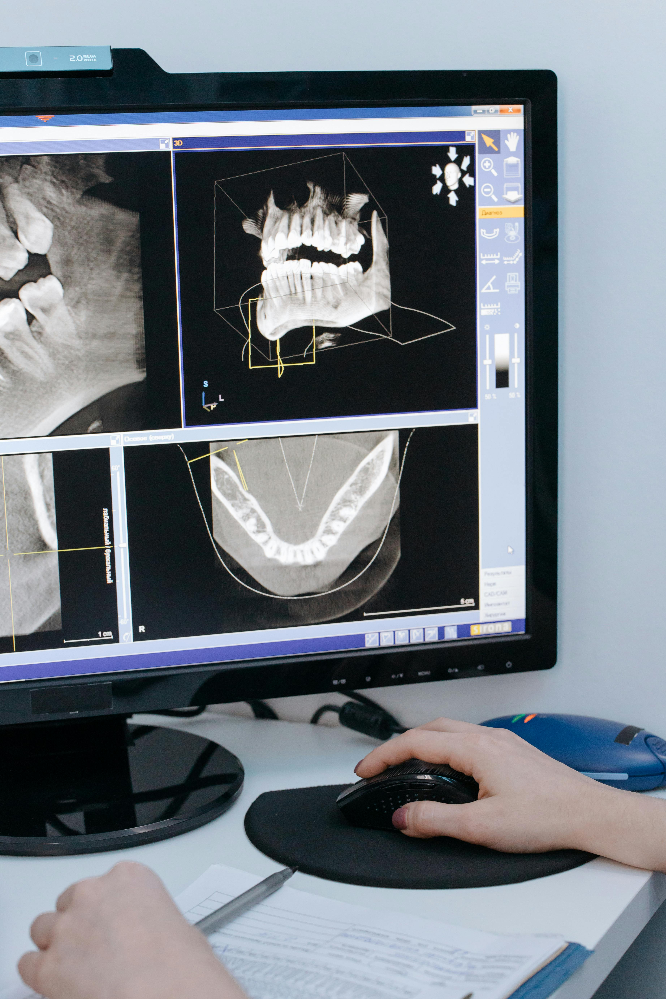

Our Diagnostic Capabilities
Our radiology department provides a full range of imaging services to help your doctors provide the most accurate diagnosis and treatment plan.

MRI (Magnetic Resonance Imaging)
High-resolution imaging for soft tissues, brain, and joint scans.

Digital X-Ray
Fast, low-dose radiation imaging for bones and chest exams.
CT & Ultrasound
Advanced cross-sectional imaging and real-time sonography for internal health.